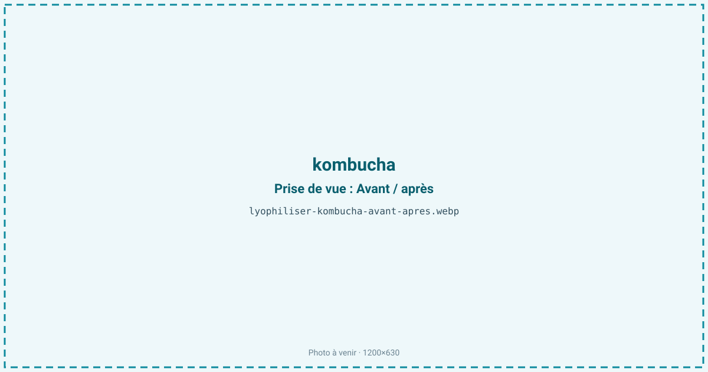
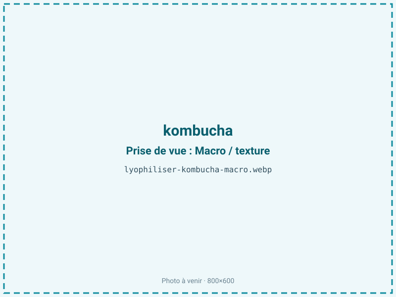
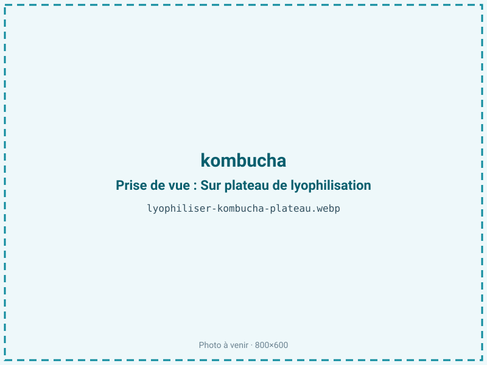
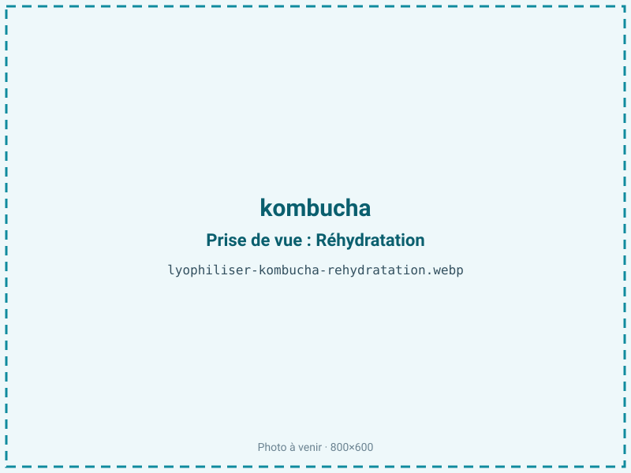

Lyophiliser du kombucha
Un kombucha vit dans son liquide et sa mère de cellulose (SCOBY), fragiles à transporter et à conserver. La lyophilisation stabilise la culture et les arômes sans chaleur, pour une souche prête à relancer une fermentation ou une poudre acidulée. On s'affranchit ainsi de la chaîne du froid et du risque de contamination pendant le stockage.

En bref
Comment kombucha se comporte à la lyophilisation
Le kombucha associe deux matières très différentes : un liquide de thé sucré fermenté, à 92 % d'eau et pH 2,5 à 3,5, et une mère (SCOBY) faite d'un réseau de cellulose bactérienne qui héberge des bactéries acétiques (Acetobacter, Gluconacetobacter) et des levures en symbiose. Le liquide porte les acides organiques (acétique, gluconique, glucuronique) et les arômes ; le SCOBY porte la culture vivante.
Lyophiliser le liquide vise une poudre aromatique et acidulée : sa très forte teneur en eau explique un rendement faible, de l'ordre de 12:1. Lyophiliser le SCOBY vise, lui, la survie des micro-organismes, comme pour un levain : à la congélation, les cristaux menacent les cellules, d'où l'intérêt d'un cryoprotecteur et d'une congélation rapide. La cellulose du SCOBY, très hydrophile, retient l'eau tenacement et ralentit le front de sublimation. Les acides organiques volatils, notamment l'acétique, peuvent partiellement s'échapper si le procédé n'est pas maîtrisé.
Paramètres de cycle
Pour la culture, ajouter un cryoprotecteur (saccharose ou tréhalose) et congeler rapidement à −35 à −40 °C afin de limiter la casse cellulaire par les cristaux. Découper le SCOBY en morceaux fins ou le broyer avec un peu de liquide de démarrage améliore l'homogénéité du séchage. Pour le liquide, l'étaler en couche fine (5 à 10 mm) ou le pré-concentrer réduit la durée du cycle, très long du fait des 92 % d'eau. Maintenir une clayette basse pour ne pas échauffer les micro-organismes.
La cible est une activité de l'eau très basse, aw 0,10 à 0,20. Le kombucha étant maigre (moins de 2 % de lipides), descendre bas est favorable : cela bloque le métabolisme résiduel et stabilise durablement la culture. Le critère d'arrêt vise cette aw basse et une poudre sèche, non collante malgré les sucres résiduels.
Pièges connus
- Très aqueux : faible rendement.
- Souches sensibles : viabilité à documenter.



Variantes & provenance
Deux produits, deux logiques. Le liquide donne une poudre aromatique dont le goût dépend du thé de base (noir plus corsé, vert plus végétal) et du degré de fermentation : un kombucha jeune est sucré et doux, un kombucha long est très acide et vineux. Les versions aromatisées (gingembre, fruits rouges, agrumes) ajoutent des sucres et de l'eau, ce qui allonge le cycle. Le SCOBY, lui, se juge sur sa vitalité : une mère jeune et active se réactive mieux qu'une mère épaisse et vieillie. La quantité de liquide de démarrage (starter) conservée avec la culture influe fortement sur la reprise. Plus le kombucha est acide, plus les cellules sont stressées et plus le cryoprotecteur est déterminant.
Conservation & DLUO
Le facteur limitant dépend du produit. Pour la culture (SCOBY), c'est la perte de viabilité des bactéries et des levures, accélérée par toute reprise d'humidité : le kombucha étant maigre, une activité de l'eau basse lui est favorable et maintient les cellules en dormance, mais dès que l'aw remonte, le métabolisme redémarre et épuise la population, l'étanchéité prime donc. Pour la poudre aromatique, le facteur limitant est l'hygroscopie : riche en sucres résiduels et en acides, elle capte l'eau très vite à l'air et se prend en masse. Dans les deux cas, on vise une barrière azotée avec absorbeur d'humidité. Comptez 12 à 24 mois en barrière azotée, de préférence au frais ; le froid prolonge la viabilité de la culture et ralentit la prise en masse de la poudre. La lumière et la chaleur sont à éviter.
12 à 24 mois en barrière azotée.
Estimez selon votre emballage :
Face aux autres procédés de séchage
Le séchage à chaud est incompatible avec une culture vivante : au-delà de 40 °C, bactéries acétiques et levures meurent, et le kombucha ne redémarre plus. Il fait aussi partir l'acide acétique volatil, gommant l'acidité caractéristique. Le micro-ondes sous vide échauffe localement et grille les cellules du SCOBY. Le séchage à l'air, trop lent sur un produit à 92 % d'eau et à pH acide, laisse le temps aux contaminations de s'installer. Seule la lyophilisation, dans le froid, préserve à la fois la viabilité de la culture et le profil aromatique acidulé du liquide. C'est le procédé retenu par les fournisseurs de cultures fermentaires pour expédier des souches stables sans chaîne du froid.
Marchés & applications
Culture kombucha stabilisée pour brasseurs artisanaux et industriels de la boisson fermentée, kits de démarrage grand public, poudre acidulée pour boissons instantanées et compléments, sauvegarde de souches de collection. Les clients types sont les producteurs de kombucha cherchant à sécuriser ou expédier leur SCOBY, les marques de kits maison, les formulateurs de boissons fonctionnelles et les fournisseurs d'ingrédients fermentaires. La poudre de kombucha sert aussi de base aromatique acidulée en mixologie sans alcool.
- Culture kombucha stabilisée
- Poudre aromatique
- Compléments
Questions fréquentes — kombucha
Le SCOBY lyophilisé redémarre-t-il ?
Oui, après réhydratation dans du thé sucré, si la lyophilisation a été douce et la culture jeune ; la reprise prend quelques jours.
Pourquoi le rendement est-il si faible ?
Le kombucha contient environ 92 % d'eau, d'où un ratio proche de 12:1 : il faut beaucoup de liquide pour peu de poudre.
L'acidité est-elle conservée ?
En grande partie ; une fraction de l'acide acétique volatil peut s'échapper, mais les acides gluconique et glucuronique restent.
Peut-on lyophiliser le liquide et la mère ?
Oui, mais avec des objectifs différents : le liquide pour l'arôme, le SCOBY pour la culture vivante.
Faut-il un cryoprotecteur ?
Pour la culture, oui : il protège bactéries et levures des cristaux de glace et améliore la reprise de fermentation.
Combien de temps se conserve la culture ?
12 à 24 mois en barrière azotée ; un stockage au frais prolonge encore la viabilité.
La poudre reprend-elle l'humidité ?
Oui, très vite : riche en sucres et en acides, elle est hygroscopique et doit rester en barrière hermétique.
Prochaine étape : envoyez-nous 200 g
Vous avez les repères du kombucha. La suite logique : nous envoyer un échantillon et repartir avec une fiche technique sur votre produit — rendement, aw finale, coût au kilo.
Tester du kombucha — 250 à 500 €Déductible de votre premier lot.